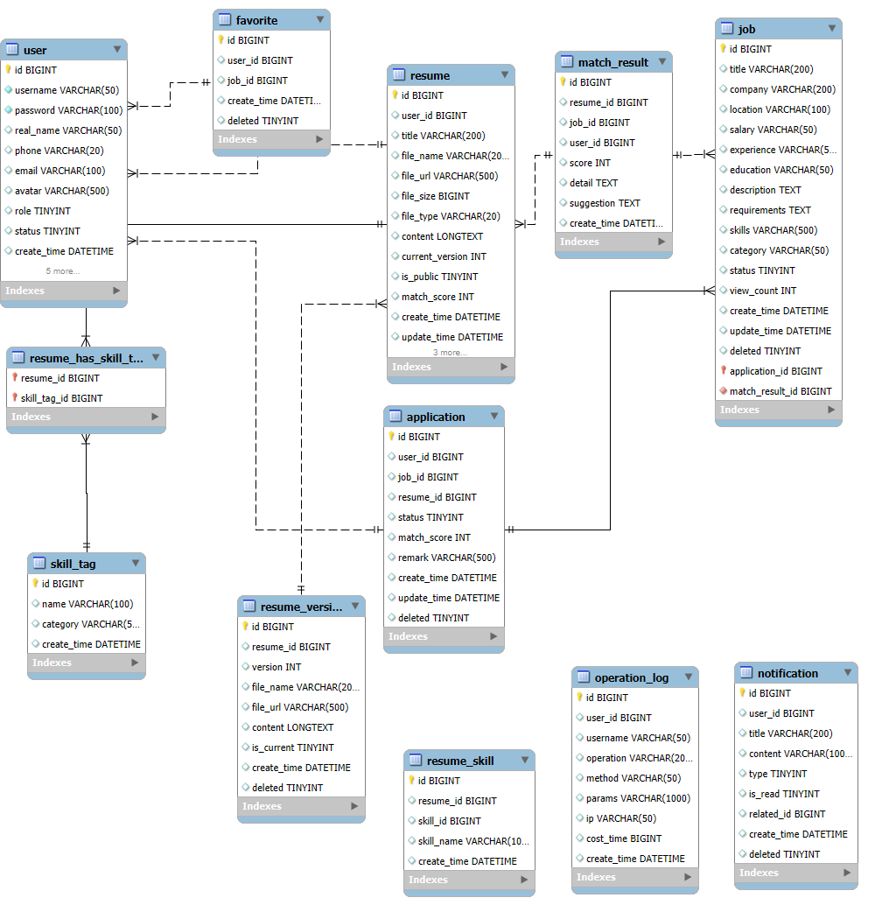

01 / BACKEND DEVELOPMENT
ResumeMatch
简历智能匹配系统
项目角色后端开发
11业务数据表
20+REST API
AI人岗匹配
0.5%业务数据出错率



项目概述
面向企业招聘场景的 Web 业务系统，覆盖求职者与管理员两端，实现简历管理、岗位管理、智能匹配、投递及状态流转等完整业务流程。
主要工作
- 独立完成 11 张业务数据表设计，进行实体关系建模，并通过索引与事务保障数据一致性。
- 基于 SpringBoot 开发 20+ 个 REST 风格业务接口，覆盖简历投递、岗位收藏、状态流转、Excel 批量导出等核心功能。
- 封装 DeepSeek 大模型 API，设计加权人岗匹配逻辑，实现 AI 能力与业务系统对接。
- 参与接口联调、业务流程验证、AI 功能效果验证及项目文档整理，形成完整业务闭环。